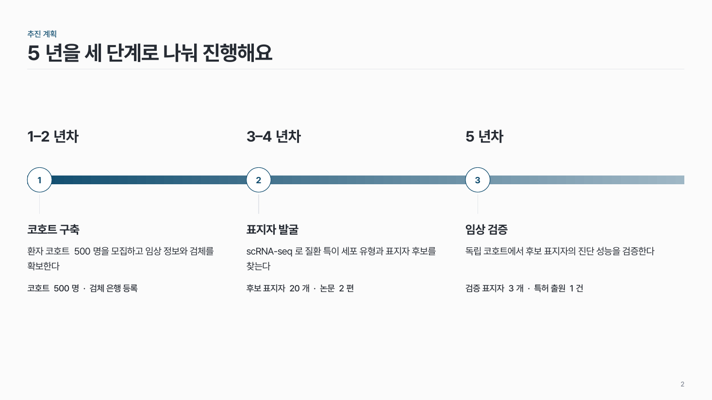

단계 로드맵 time-01
전체 기간을 띠 하나로 그리고 단계마다 나눠, 단계 아래에 이름·목표·산출물을 써요.

이 시안
3단계 · 기간에 비례한 너비 · 핵심 단계
슬라이드 제목: 2단계에서 표지자 후보를 찾아요
언제 쓰나
과제 기간을 2–3단계로 나눠 단계별 목표와 산출물을 보여 줄 때요. "언제 무엇을 끝내는가"를 한 장에서 확인해야 하는 과제 계획서·평가에 맞아요.
구성
- 위에 전체 기간 띠 하나 (같은 계열 그라데이션).
- 띠를 단계 수만큼 나누고, 경계마다 번호 원.
- 띠 위에 기간, 아래에 단계 이름 → 목표 한 문장 → 산출물 한 줄.
지킬 것
- 단계는 2–3개.
- 단계 너비는 기간에 비례. 기간이 같으면 같은 너비.
- 단계 이름 10자, 목표 40자 안팎.
- 핵심 단계는 번호 원과 이름 색으로만 강조.
하지 말 것
- 단계마다 화살표를 따로 그려 이어 붙이지 않아요.
- 모든 단계를 같은 진하기로 칠하지 않아요.
- 단계 칸에 글머리 기호 4개 이상을 넣지 않아요.
더 볼 게시물 Instagram @peedori_
시안 비교
같은 내용을 옵션만 바꿔 그렸어요. 그림을 누르면 크게 보여요.
A3단계 · 기간에 비례한 너비 · 핵심 단계
슬라이드 제목: 2단계에서 표지자 후보를 찾아요

B같은 내용 → 같은 너비 · 강조 없음
슬라이드 제목: 5년을 세 단계로 나눠 진행해요